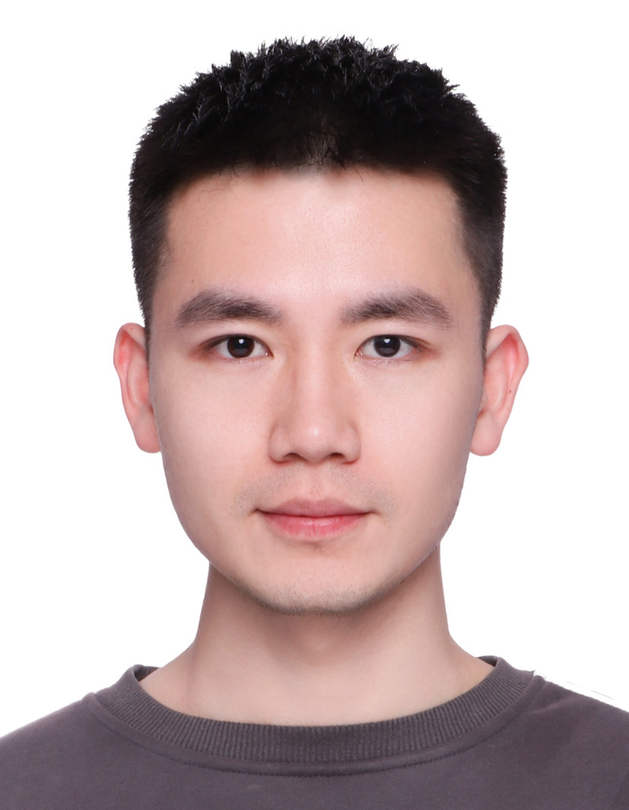
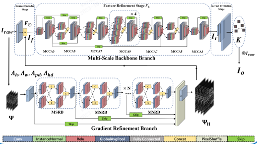
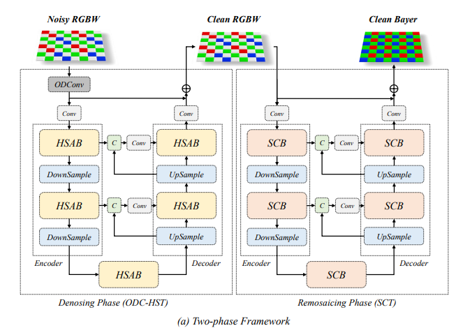
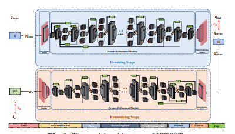
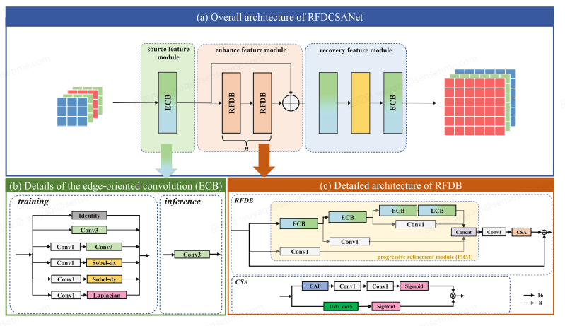
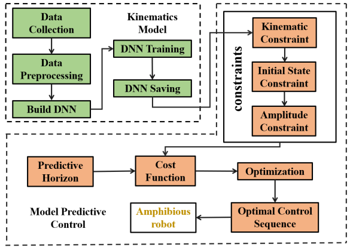
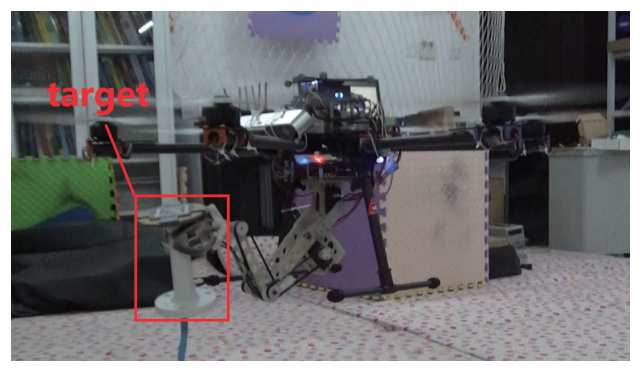

|
Yaqi Wu 巫亚奇
I am a Senior Researcher in SenseTime where I work with an amazing group of researchers and engineers to build high impact computational photography products.
Prior to join SenseTime, I obtained M.S. from Department of Automation, Harbin Institue of Technology, where I was awarded the National Scholarship(2/61).
My main job at work is to integrate AI algorithms into Image Sensors and Chips. I dream of creating meaningful products, and I am so excited that some influential products have already been or are about to be released.
My research interest is in low-level computer vision, especially ISP-related algorithms and HDR-related algorithms. I have some research experience in the field of robotics.
Email /
Google Scholar /
|

|
News
2023-06: One paper is accepted by ICIP 2023.
2023-02: We won 2nd place in CVPR 2023 MIPI Challenge on RGBW Joint Remosaic and Denoise.
2022-06: We won 3rd place in ECCV 2022 Learned Smartphone ISP on Mobile GPU's Challenge.
2022-02: We won 1st place in CVPR 2022 NTIRE Challenge on Spectral Demosaicing.
|
Publication
(# corresponding author, * equal contribution)
|
|
Date |
Topic |
|  |
[6] "Joint Demosaicing and Denoising with Gradient Guidance in Quad Bayer CFA",
Xun Wu*, Yaqi Wu*# , Jiawei Zhang, Feng Zhang, Jimmy S. Ren
IEEE International Conference on Image Processing (ICIP 2023).
paper |
2023 |
Comp. Photography |
|  |
[5] "OTST: A Two-Phase Framework for Joint Denoising and Remosaicing in RGBW CFA",
Zhihao Fan*, Xun Wu*, Fanqing Meng, Yaqi Wu# , Feng Zhang
IEEE Conference on Computer Vision and Pattern Recognition Workshop (CVPRW 2023).
paper |
2023 |
Comp. Photography |
|  |
[4] " Learning to Joint Remosaic and Denoise in Quad Bayer CFA via Universal Multi-scale Channel Attention Network",
Xun Wu*, Zhihao Fan, Jiesi Zheng, Yaqi Wu# , Feng Zhang
European Conference on Computer Vision Workshop (ECCVW 2022).
|
2022 |
Comp. Photography |
|  |
[3] "Residual Feature Distillation Channel Spatial Attention Network for ISP on Smartphone",
Jiesi Zheng*, Zhihao Fan, Xun Wu, Yaqi Wu# , Feng Zhang
European Conference on Computer Vision Workshop (ECCVW 2022).
|
2022 |
Comp. Photography |
|  |
[2] "Amphibious robot's trajectory tracking with dnn-based nonlinear model predictive control",
Yaqi Wu* , Anxing Xiao, Haoyao Chen#, Shiwu Zhang, Yunhui Liu
IEEE/ASME International Conference on Advanced Intelligent Mechatronics (AIM2020).
paper |
2020 |
Robotics |
|  |
[1] "Aerial grasping based on VR perception and haptic control",
Yaqi Wu*, Jin Song, Jiabi Sun, Fenfang Zhu, Haoyao Chen#
IEEE International Conference on Real-time Computing and Robotics (RCAR2018).
paper |
2018 |
Robotics |
Honor and Awards
- 2nd place in CVPR 2023 MIPI Challenge on RGBW Joint Remosaic and Denoise, 2023
- 3rd place in ECCV 2022 Learned Smartphone ISP on Mobile GPU's Challenge, 2022
- 1st place in CVPR 2022 NTIRE Challenge on Spectral Demosaicing, 2022
- Outstanding Employee at SenseTime Technology, 2021
- National Scholarship, 2020
- 1st place of the Second International Youth Drone Competition, 2019
|
{kind=link}